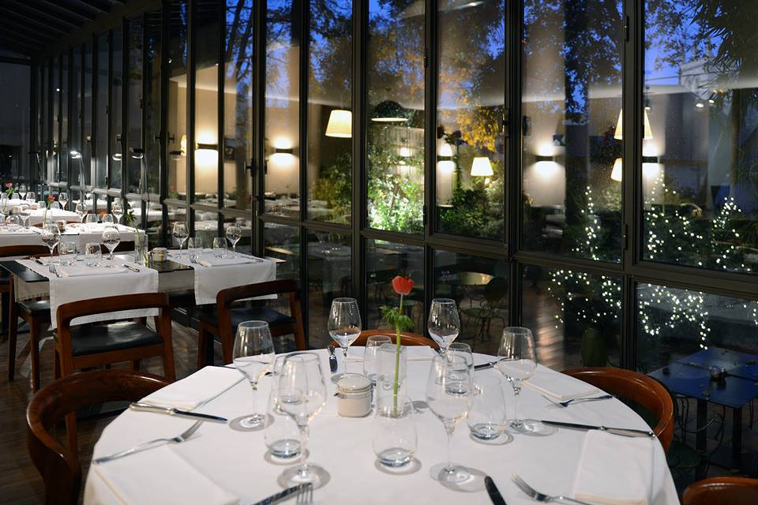
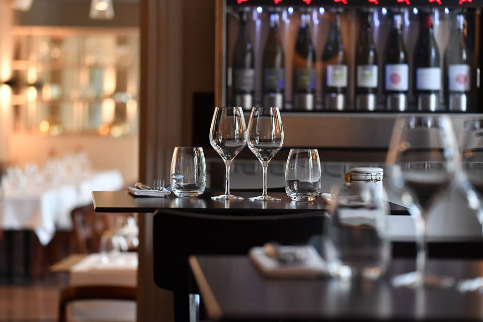

Restaurant gastronomique Le Petit Jardin.
 Une insitution Montpelliéraine...
Une insitution Montpelliéraine...
Dans le centre historique… un endroit connu et reconnu par tous les montpelliérains depuis plus de 50 ans.
Niché dans une verdure (ou un cadre verdoyant) insoupçonnable, on y découvre le clocher de la cathédrale St Pierre.
Coté restaurant
Notre chef, Fabrice AMAR, disciple d’Escoffier, vous fera déguster une cuisine méditerranéenne raffinée.
Coté Bistrot
Le chef puise son inspiration sur les 5 continents, pour élaborer une cuisine fait de plats à partager ou à déguster de façon individuelle en toute convivialité.
Mais quelque soit votre choix, vous pourrez être installé aux beaux jours sur la terrasse ombragée.
